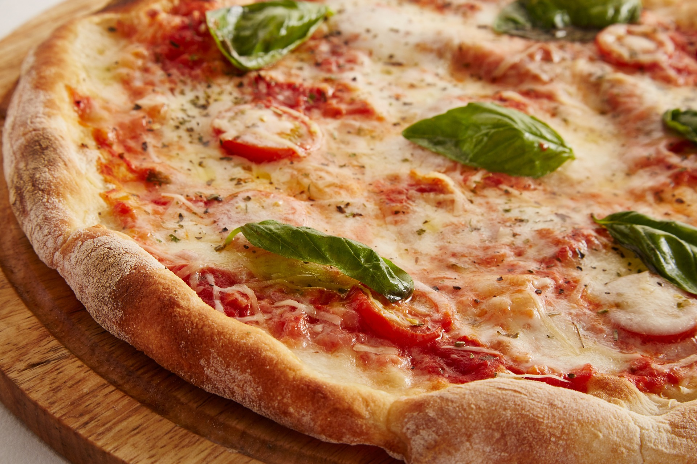

Place a pizza stone or tiles on the middle rack of your oven and turn heat to its highest setting. Let it heat for at least an hour. Put the sauce in the center of the stretched dough and use the back of a spoon to spread it evenly across the surface, stopping approximately ½ inch from the edges. Drizzle a little olive oil over the pie. Break the cheese into large pieces and place these gently on the sauce. Scatter basil leaves over the top. Using a pizza peel, pick up the pie and slide it onto the heated stone or tiles in the oven. Bake until the crust is golden brown and the cheese is bubbling, approximately 4 to 8 minutes. Tip: In a food processor, whiz together whole, drained canned tomatoes, a splash of olive oil and a sprinkle of salt. Keep leftover sauce refrigerated.